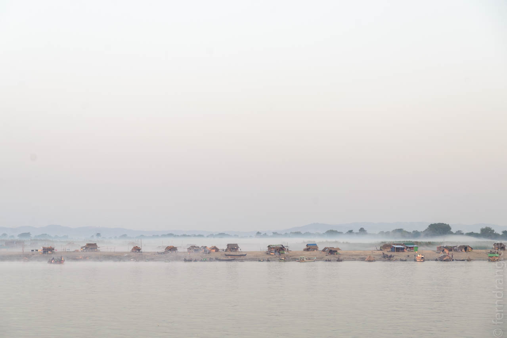
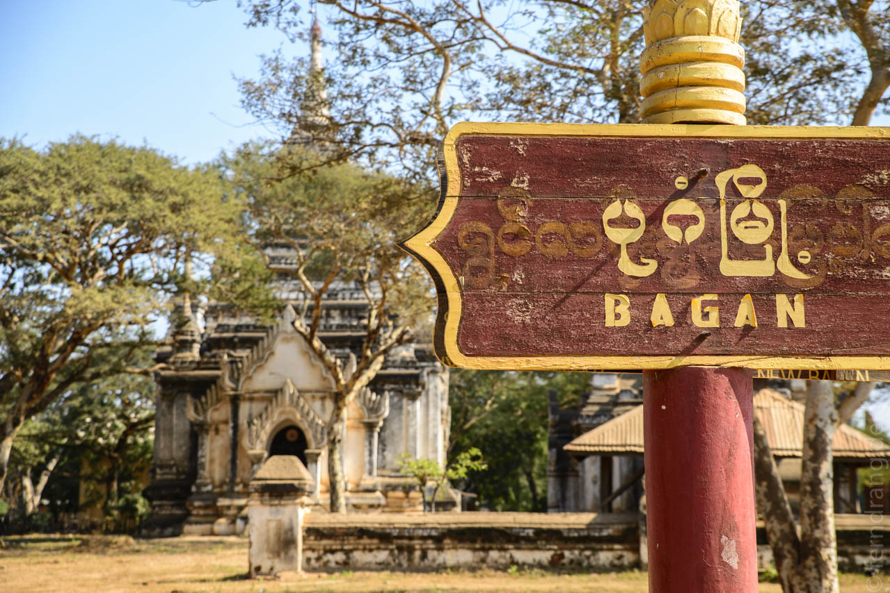
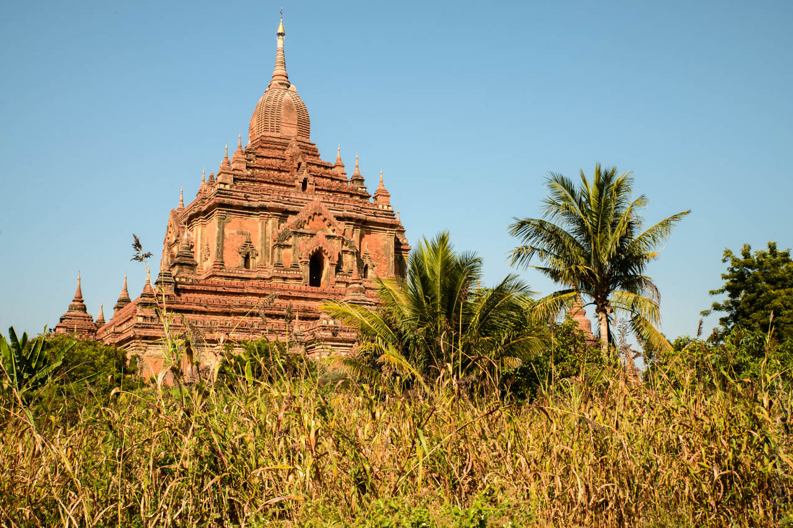
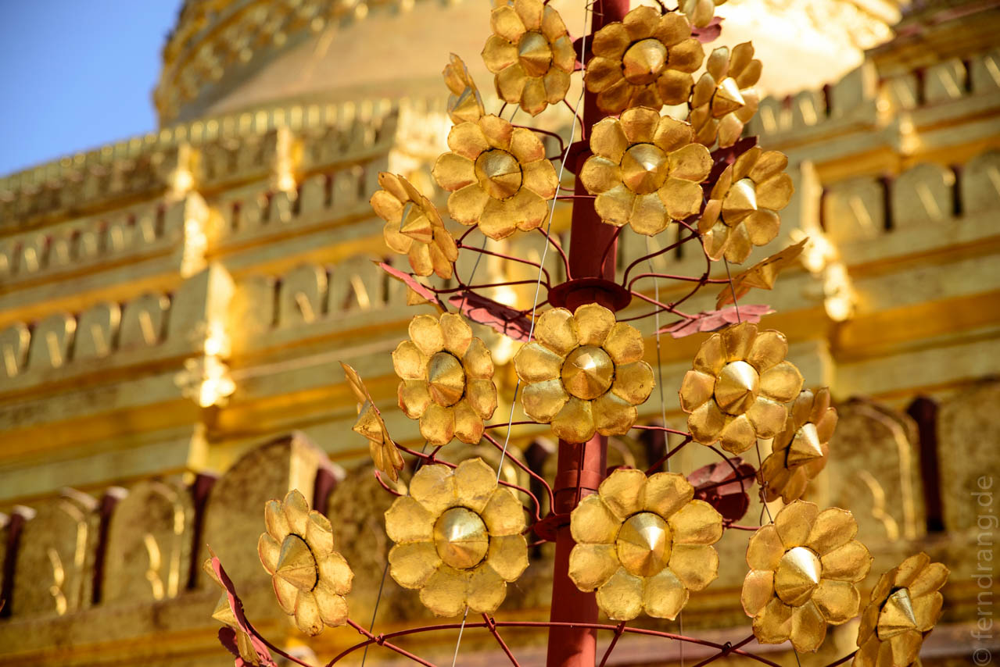
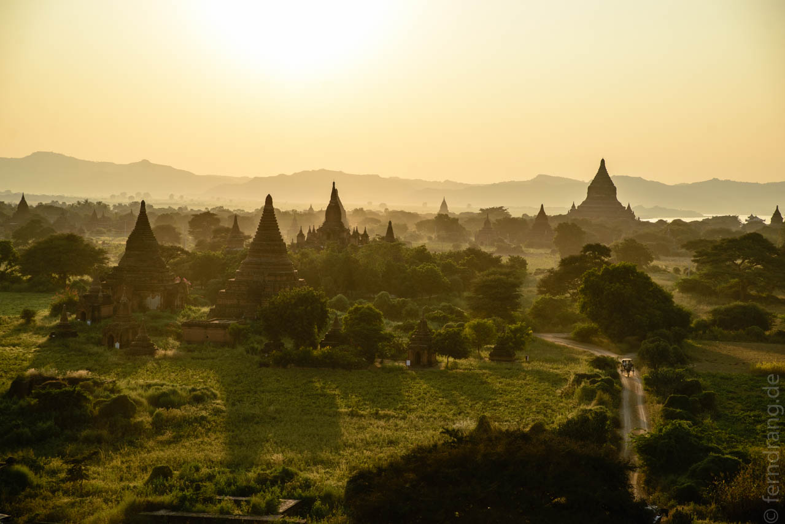
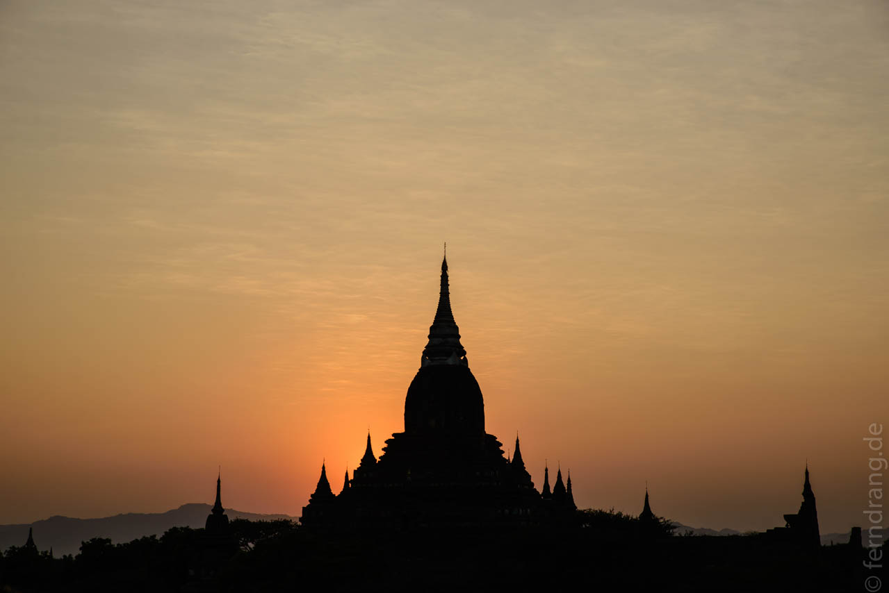

21. Dezember 2013
Bagan
Die Strecke von Mandalay nach Bagan haben wir mit dem Boot zurück gelegt. Statt der erwarteten sieben Stunden waren es planmäßige zehn und tatsächlich elf Stunden, so dass wir das doppelte Glück hatten Sonnenauf- und untergang an Bord zu erleben. Der Irrawaddy ist ein langweiliger Fluss. Die Szenerie ist eigentlich nur im Zeitraffer erträglich, lediglich die zahlreichen Pagoden (was sonst?) am Ufer lockern das Bild auf. Die goldenen Kleckse können aber auch nicht lange begeistern. Zumindest war es ein sehr entspannter Tag an Bord und wir sind endlich zum Lesen gekommen.
Bagan erstreckt sich in einem Areal von etwa fünf mal fünf Kilometer über mehrere Ortschaften: Nyaung-U, dem größten Dorf, wo auch der Flughafen und der Bootsanleger ist, Alt-Bagan, das vor ein paar Jahren alle Bewohner verlassen mussten und wo viele der Tempel sind, sowie Neu-Bagan, wohin umgesiedelt wurde und wo keine Tempel stehen. Dazwischen gibt es noch ein paar andere Dörfer, Sand, Niembäume und über 4.000 Pagoden.
Nachts werden die größten Pagoden beleuchtet, was unseren Weg vom Anleger in Nyaung-U zum Kyaw-Hotel in New Bagan schon zur ersten Besichtigungstour machte. Ein richtiges Bild von der schieren Menge von Stupas und Pagoden konnten wir uns aber erst am nächsten Morgen machen. Wir sind auf eine nahe gelegene Pagode gestiegen und der Anblick war überwältigend. Soweit das Auge reicht, sieht man zahllose rot-braune Pinne in allen Größen aus der steppigen Landschaft heraus ragen – und in jedem sitzt mindestens ein Buddha. Seit mehr als tausend Jahren werden hier Backsteine und gutes Karma angehäuft. In dieser Gegend ist es auch bei Zeitgenossen noch beliebt, eine Stupa oder Größeres zu stiften. Daher gibt es auch Streit um den Status als Weltkulturerbe. Dass es das ist, sieht man auf den ersten Blick, aber die UNESCO möchte lieber tote Kultur verwalten.
Bagan lässt sich hervorragend mit dem Fahrrad erkunden. Da das Areal so klein und flach ist, kann man sich problemlos von den aufragenden Tempel anlocken lassen. Im Gegensatz zu Angkor Watt in Kambodscha ist hier alles etwas kleiner und auch weniger verziert. Dafür ist es kein Ruinenfeld sondern ein lebendiger Ort, der von Mönchen und Buddhisten aktiv genutzt wird. Die prächtigsten Bauwerke stammen aus dem neunten bis dreizehnten Jahrhundert. Viele sind renoviert oder ausgebessert, weil der Zahn der Zeit und ein fieses Erdbeben in den Siebzigern an den Steinen genagt haben. Vermutlich waren die heute meist nackten Backsteine früher verputzt. Trotzdem sind die meisten Pagoden von außen interessanter als von innen, da fast gar keine Bemalungen erhalten sind und man offenbar auf die kunstvolle Gestaltung der Außenseite mehr Wert gelegt hat als auf schöne Buddha-Figuren.
 Sonnenuntergänge scheinen eine myanmarische Spezialität zu sein. Auch Bagan hält seine besonderen Orte dafür bereit. Auf der Shwe San Daw Phaya Pagode sammeln sich schon ab vier Uhr ganze Horden von Touristen, die dicht gedrängt auf den Abend warten. Wenn vor dem Irrawaddy der Dunst aufsteigt und überall die Stupas rot in der Sonne glühen, lässt sich der Unsinn, den die vielen deutschen Touristen um einen herum verzapfen, fast ausblenden.
 Mit noch mehr Tempeln und noch mehr Radfahren haben wir unsere zwei Tage schnell herum gebracht. Die Gegend ist auch bekannt für ihre filigranen Lackarbeiten, deren Qualität von den Händlern ungefragt durch spurloses anzünden und aneinander schlagen bewiesen wird. Praktisch alle größeren Tempel sind von Verkaufsständen umgeben, die gerne dabei behilflich sind, die Reisekasse zu erleichtern.